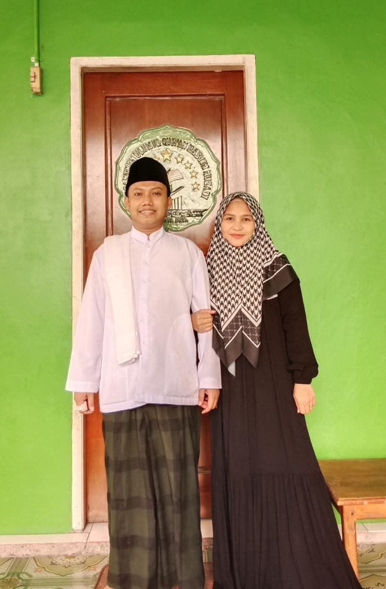

Pondok Pesantren Ulumul Qur'an Hasyim Muzadi
Pondok Pesantren Ulumul Qur'an Hasyim Muzadi
Mengapa memilih Pondok Pesantren Ulumul Qur'an Hasyim Muzadi
Sejarah, visi, misi dan profil pesantren
Profil pasangan pengasuh PPUQHM
Para masyayikh dan dewan pengajar pesantren
Program pendidikan Al-Qur'an, kitab kuning, dan kegiatan pesantren
Info terkini kegiatan dan prestasi santri
Kontak langsung pengurus pesantren
Setiap santri yang khatam 30 juz menerima sanad Al-Qur'an muttashil ke Mbah Munawwir Krapyak — sanad utama tahfidz abad 20 di Nusantara.
Diasuh pasangan hafidz-hafidzah dengan total 6 jalur sanad Al-Qur'an, dan diajar para asatidz bersanad muttashil.
Sistem hafalan terstruktur dan teruji dengan metode Arba'in — mempermudah santri mencapai hafalan mutqin (kuat dan tidak mudah lupa).
Pengajaran kitab kuning dengan metode Amtsilati dan pembelajaran tilawah Al-Qur'an metode Tilawati — modern, terstruktur, efektif untuk segala usia.
Tersedia beasiswa untuk santri dhuafa berprestasi, mengikuti filosofi NU "murah meriah, banyak berkah". Pendidikan berkualitas untuk semua kalangan.
Tegas berdiri di atas manhaj Ahlus Sunnah wal Jama'ah ala Nahdlatul Ulama — bebas dari radikalisme dan liberalisme, mewarisi tradisi pesantren NU.
Akses studi lanjut ke kampus terkemuka: STKQ Al-Hikam Depok, Az-Zaitunah Tunisia, Al-Azhar Mesir, Universitas Islam Madinah, dan lainnya.
Pesantren Ulumul Qur'an Hasyim Muzadi adalah lembaga pendidikan Islam yang berdedikasi dalam mencetak generasi hafidz Al-Qur'an yang unggul, berakhlak mulia, dan berwawasan luas di tanah Papua.
Berlokasi di Jl. Sunan Kalijaga, Kel. Karang Senang Sp.3, Distrik Kuala Kencana, Papua Tengah, kami hadir sebagai pusat pendidikan Islam yang memadukan metode tahfidz dengan pembinaan karakter Islami yang kuat dan menyeluruh.
Pesantren ini mengembangkan kurikulum yang berfokus pada penghafalan Al-Qur'an secara terstruktur, dipadukan dengan ilmu-ilmu agama seperti fiqih, aqidah, bahasa Arab, serta pendidikan karakter berbasis nilai-nilai Islam.
Selengkapnya →"Menjadi pesantren tahfidzul Qur'an unggulan yang melahirkan generasi ahlul Qur'an berkarakter Aswaja An-Nahdliyah dan berwawasan Islam Wasathiyah untuk kemaslahatan umat dan bangsa."
Pesantren Ulumul Qur'an Hasyim Muzadi menggunakan sistem pembelajaran terpadu yang memadukan pendekatan tahfidz modern dengan kajian ilmu-ilmu keislaman yang mendalam dan autentik.
Metode talaqqi dan musyafahah menjadi tulang punggung program, di mana setiap santri menyetorkan hafalan langsung kepada pengajar bersanad sehingga kualitas bacaan terjaga dengan sangat baik.
Selain tahfidz, santri juga mendapatkan pembelajaran ilmu tajwid, tafsir, bahasa Arab, fiqih, dan aqidah yang diajarkan secara terstruktur dan berjenjang sesuai kemampuan masing-masing santri.
Pesantren dilengkapi berbagai fasilitas untuk mendukung proses belajar dan kehidupan santri secara nyaman dan optimal.
Tempat ibadah dan kegiatan keagamaan
Tempat tinggal santri yang nyaman
Olahraga, seni islami, hadroh, dan Pencak Silat Pagar Nusa
SMP dan SMA terakreditasi
Menyelenggarakan pendidikan tahfidzul Qur'an dengan sanad muttashil hingga Rasulullah SAW.
Mengembangkan kajian ilmu-ilmu Al-Qur'an dan ilmu syariah dengan tradisi kitab kuning klasik NU.
Membentuk karakter santri yang berakhlak Qur'ani sesuai uswah hasanah Rasulullah SAW.
Menanamkan manhaj Ahlus Sunnah wal Jama'ah An-Nahdliyah sebagai landasan beragama.
Mengamalkan pemikiran Islam Wasathiyah KH. Ahmad Hasyim Muzadi sebagai moderasi beragama.
Berkhidmah aktif kepada masyarakat Mimika dan Papua melalui pendidikan, dakwah, dan sosial.
Mempersiapkan kader ulama berwawasan internasional melalui bahasa Arab dan Inggris.

السَّلَامُ عَلَيْكُمْ وَرَحْمَةُ اللَّهِ وَبَرَكَاتُهُ
PPUQHM diasuh oleh pasangan suami-istri yang dipertemukan oleh empat lapis takdir indah, membawa total 6 jalur sanad Al-Qur'an muttashil hingga KH. Muhammad Munawwir Krapyak, dan menyatukan 8 tradisi pesantren NU dalam satu kemitraan dakwah di tanah Papua.
"Pasangan ini bukan sekadar pasangan suami-istri biasa. Mereka adalah dua kurator tradisi yang masing-masing membawa kekayaan tersendiri dari masa pendidikan mereka, dan kini menyatukannya untuk membangun pesantren yang kaya warna." — Pernikahan 27 Desember 2018

السَّلَامُ عَلَيْكُمْ يَا أَهْلَ الْعِلْمِ
PPUQHM diberkahi oleh keberadaan para masyayikh yang menjadi sumber keilmuan, sanad, dan barakah bagi seluruh sivitas pesantren. Mereka adalah para ulama, guru, dan tokoh panutan yang silsilah keilmuannya bersambung hingga Rasulullah SAW.
Kehadiran para masyayikh menjadi jangkar spiritual bagi PPUQHM — menjamin keaslian sanad, kedalaman ilmu, dan kebersihan manhaj Aswaja An-Nahdliyah yang menjadi identitas pesantren.
📜 Biografi Semua Masyayikh →Awal mula berdirinya pesantren dari program Al-Hikam Depok dan pengabdian masyarakat di SP3 Mimika.
Baca Selengkapnya →Perjalanan pembentukan Pondok Pesantren Ulumul Qur'an Hasyim Muzadi secara resmi.
Baca Selengkapnya →Momen bersejarah peresmian pesantren dan perkembangannya hingga saat ini.
Baca Selengkapnya →Daftarkan putra-putri Anda menjadi bagian dari generasi Qur'ani berkarakter Aswaja-Wasathiyah. Pilih metode pendaftaran yang paling nyaman.
Jl. Sunan Kalijaga, Kel. Karang Senang Sp.3,
Distrik Kuala Kencana, Papua Tengah
Setiap Hari: 08.00 – 17.00 WIT
Waktu Sowan: Jadwal sesuai pengasuh